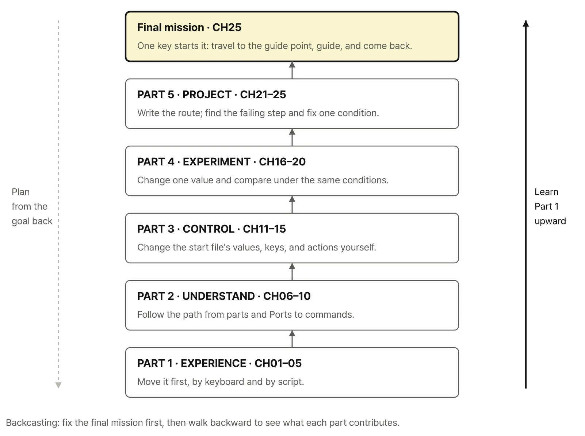

Full Contents

After the prologue, the how-to-use guide, and Getting Started, the book runs through five parts and twenty-five chapters, each with three hands-on sections. The book is in Korean; the titles below are English translations for reference. Code identifiers appear exactly as they do in the book.
Before Part 1
- Prologue
Physical AI Begins the Moment the Robot Moves - How to Use This Book
Move It First, Find the Reason, Extend with Code - What You Need
- Getting Started
Preparing the RoboCo Environment
PART 1 · EXPERIENCE
Drive It First
Drive the robot with Controls Mapping, then move the same keys to the Script robot. Compare speed and terrain, read the Text Screen and LED, and complete a first guide mission by hand.
- CHAPTER 01. How Does Controls Mapping Move the Robot?
1.1 W and S: forward, backward, and stopping
1.2 A and D for turning, Z and C for spinning in place
1.3 Key 1 Toggle Screen: deploying and folding - CHAPTER 02. What Changes When the Same Keys Go Through a Script?
2.1 The Controls Mapping UI, running the start file, and key 0 Reset All
2.2 Script driving with W/S/A/D/Z/C
2.3 Q and E for diagonal moves - CHAPTER 03. How Do Power Ratio and Terrain Change the Motion?
3.1 Different power ratios per key and how motion changes
3.2 Driving on flat ground versus a slope
3.3 Finding a way past ledges, stairs, and conveyors - CHAPTER 04. How Can You See Key Input and the Robot's Response?
4.1 Key 1 and deploying or folding the screen
4.2 Input LED Pulse from Controls Mapping and LED Color from the start file
4.3 The four-line status display and guide message on the Text Screen - CHAPTER 05. Can It Go, Guide, and Come Back?
5.1 Choosing a guide spot and start position in the Sandbox
5.2 Reaching the target with turns, in-place rotation, and diagonal moves
5.3 First mission: stop → deploy → guide → fold → return
PART 2 · UNDERSTAND
Understand the Structure
Trace drive and steering axes, the Port numbers of FL/FR/RL/RR, the Controls path versus the Script path, and why a motor command differs from the actual motion.
- CHAPTER 06. How Is the Drive Motor Different from the Steering Motor?
6.1 Wheel rotation versus steering-axis rotation
6.2 Viewing direction of an axis and CW/CCW
6.3 Axes and connections of the Steering Servo and Screen-Fold Servo - CHAPTER 07. With Many Similar Motors, How Do You Find the Right One?
7.1 Matching the on-screen part list to the robot
7.2 FL/FR/RL/RR positions and Port numbers
7.3 Identifying targets by display name, API class, and Port - CHAPTER 08. How Does the Same W Key Travel Differently in Two Robots?
8.1 Robot 1 — W → Controls Mapping → DC Motor and Input LED
8.2 Robot 2 — W → Input LED Pulse, and W → Script → DC Motor and LED Color
8.3 Roles of Controls Mapping, the RoboCo API, and the Educational Library - CHAPTER 09. Why Does the Motor Command Differ from the Actual Motion?
9.1 Forward, backward, and the sign and ratio of spin(power)
9.2 Left and right DC Motor mounting and wheel rotation direction
9.3 How Target RPM, Torque, and ground contact change real motion - CHAPTER 10. What Motions Come from Combining Four Wheel Directions?
10.1 W and S for basic driving, A and D for turning
10.2 Z and C, spinning in place: 45° steering on each wheel plus drive direction
10.3 Q and E, diagonal moves: all four wheels set parallel at ±45°
PART 3 · CONTROL
Control Values and Actions
Edit values in the start file c01_start.py, then open the Educational Library one layer at a time: key handling, grouping four DC Motors, servo limits, and logging.
- CHAPTER 11. Which Value Should You Change First?
11.1 Robot settings as numbers, strings, and booleans
11.2 Code that runs once versus code that repeats
11.3 Changing LED Color in the start file while keeping the Controls LED Pulse - CHAPTER 12. How Does a Script Read Key Input?
12.1 Press and release, and last-pressed-key priority
12.2 Connecting W/S/A/D/Z/C/Q/E to driving actions
12.3 One press of key 1, one change of the screen target - CHAPTER 13. How Do Four DC Motors Become One Driving Function?
13.1 Creating and reusing References by FL/FR/RL/RR Port
13.2 Building WASDZCQE actions from drive functions and the provided steering functions
13.3 spin(0), stop(), and releasing the Script drive signal - CHAPTER 14. How Are the Wheel and Screen Ranges Set?
14.1 The 0° reference and CCW/CW limits
14.2 The (ccw, cw) order and per-wheel target angle signs
14.3 Driving postures and Screen-Fold Servo deploy and fold angles - CHAPTER 15. How Can You Tell What the Robot Is Doing Now?
15.1 Logging start, input, state changes, and errors to the console
15.2 Showing the input and current command on the Text Screen
15.3 Logging only state changes and releasing Script signals on exit
PART 4 · EXPERIMENT
Change One Condition, Compare
Use keys 2, 3, and 4 to step four wheel-motor settings (Target RPM, acceleration time, brake force, and braking time) through ten levels, and compare before and after under the same conditions. Results from manual driving and Script control are recorded side by side.
- CHAPTER 16. What Must Stay the Same for a Fair Comparison?
16.1 Starting experiment mode with key 2 and setting a baseline
16.2 Stepping Acceleration Time with keys 3 and 4
16.3 Recording level values and before/after on the screen and LOG - CHAPTER 17. Does Spinning Faster Help It Climb?
17.1 Telling a stalled wheel from a slipping wheel on a slope
17.2 Changing the spin(power) ratio and Target RPM separately
17.3 Changing Max Torque and comparing slope results - CHAPTER 18. Odd Steering or a Wobbling Body: Where Do You Start?
18.1 Comparing staggered steering and a slow return to 0°
18.2 Steering zero, Flip settings, command signs, and double inversion
18.3 How CCW/CW limits and part interference change the steering range - CHAPTER 19. Why Does It Keep Moving After a Stop Command?
19.1 A lingering Script drive signal versus inertia
19.2 Changing Max Brake Force and Braking Time one at a time
19.3 Repeating runs and comparing stop-position error - CHAPTER 20. How Do Manual Driving and Script Control Compare?
20.1 Running Robot 1 and Robot 2 from the same start on the same route
20.2 Recording path, stop position, and handling across repeated runs
20.3 When on-the-spot driving wins and when repeatable Script control wins
PART 5 · PROJECT
Complete and Improve the Mission
Write the route in MISSION_ROUTE and run a go–guide–return mission through the WAIT → MOVE → GUIDE → RETURN state flow. When the result is off, find the last good event in the LOG and change one condition only.
- CHAPTER 21. Who Will the Robot Guide, and to What?
21.1 Choosing a mission: place guide, event notice, or work-spot marker
21.2 Designing the start point, guide point, and route in the Sandbox
21.3 Defining arrival position, heading, message, and return as completion criteria - CHAPTER 22. How Do Moves, Turns, and Stops Become One Route?
22.1 Driving the mission route first with key input
22.2 Ordering moves with the MISSION_ROUTE list
22.3 Bounding the motion with run time and user interruption - CHAPTER 23. How Do Moving and Guiding Become One State Flow?
23.1 Building WAIT, MOVE, GUIDE, and RETURN states
23.2 Automatic screen deploy/fold versus the key-input Toggle
23.3 Finishing a timed command versus actually arriving - CHAPTER 24. Can You Recover When It Goes Wrong?
24.1 Tracing causes in order: robot file, Input, Port, Motor settings
24.2 Finding where it stopped in the console LOG and Text Screen
24.3 Stop → release Script signals → restore the initial state → run again - CHAPTER 25. Final Mission: The Guide Robot
25.1 Full run: start → move → align → guide → fold → return
25.2 Finding the biggest cause of failure and changing one condition
25.3 Running again to confirm, then extending the mission to a new place
Epilogue
From a Robot That Moves to a Robot That Senses and Decides
Appendices
- A. Robot Files, Scripts, Library, and Versions
- B. Key Names and Controls Mapping
- C. Ports, Wheel Directions, and Steering Zero
- D. DC Motor and Servo Motor Settings and API Properties
- E. RoboCo API and the Author's Educational Library
- F. Python Syntax for Robot Control
- G. Text Screen, Input LED, and Console LOG
- H. Run Errors and Recovery
- I. Comparison Records and Mission Checklists
- J. Quick Reference: Terms and Units